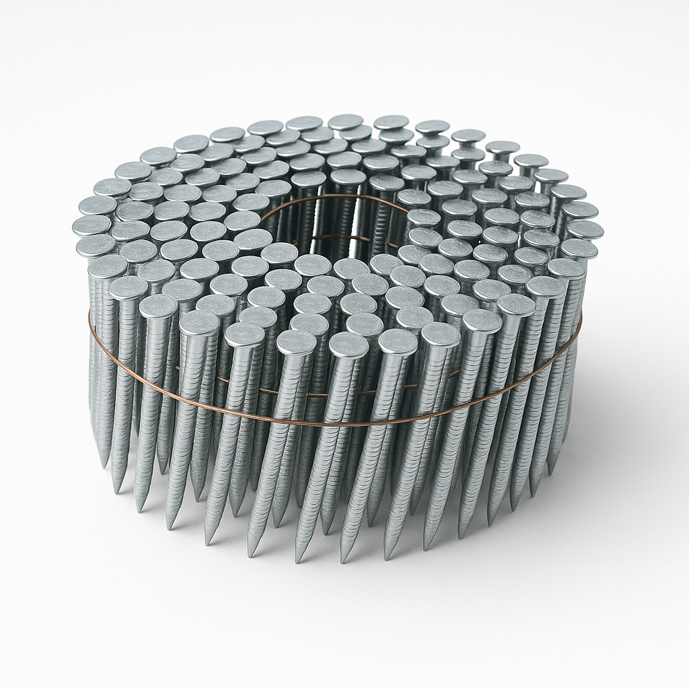

412+ SKUs across loose nails, collated gun nails, coil nails, screws, bolts and structural hardware. Manufactured in our own factory in China to NZ specifications, then stocked at our East Tamaki, Auckland warehouse for fast local supply — fully quality-controlled, ISO 9001 manufactured, and BRANZ Appraised where it counts.

Browse any category to see the sub-ranges, materials, and sizes we manufacture and stock locally in East Tamaki, Auckland.

Construction-grade hardware: brace straps, joist hangers, washers, soakers and pin anchors.

Decking, batten, chipboard, purlin, jolt-head and HWF/Tek screws in stainless and Ruspert coated.

34° paper-collated framing, weatherboard and joist-hanger nails plus brads & staples.

Plastic and wire collated coil nails for siding, fencing, roofing and industrial use.

Engineering bolts, coach bolts, screw bolts, through bolts and coach screws.

Bright, HD galvanised, stainless and silicon bronze loose nails for trade and retail.
Pulled straight from our official product catalogue — what makes us a different kind of fastener supplier.
By owning our manufacturing line in China, we retain full quality control and only use raw material with Mill Certification.
We develop products to fit the NZ market specifically — head shapes, shank patterns, and pack sizes that the trade actually wants.
Our structural hardware (Joist Hangers and CPCs) holds full BRANZ Appraisal Certificates (#1132 and #1133, issued 25 Nov 2025).
Finished stock held at our East Tamaki, Auckland warehouse for prompt local supply and same-day picking on most orders.
Pre-ordered products manufactured in 5 weeks. Customers maximise cash flow and storage without holding old stock.
Need a non-standard size, pack quantity or coating? Our manufacturing setup is built for custom orders.
We own and operate our manufacturing line in China — not a third-party contract — so we retain complete quality control over every stage, from raw wire selection through to coating and packaging. Finished product is then shipped to our East Tamaki, Auckland warehouse for prompt local supply across New Zealand.
We've been producing on a mass scale with active R&D for over 15 years. We keep developing new qualified fastening products to meet the demands of the New Zealand market — including head shapes and shank patterns specific to NZ timber and weatherboard practices.
Learn about our manufacturing →Stock is held at our East Tamaki warehouse. We aim to dispatch every order within 24 hours during working days. Free freight within Auckland on orders above $500+gst.
We supply trade customers and merchants across New Zealand. Get the product catalogue, BPIR documentation and wholesale pricing — opening a trade account takes 2 minutes.